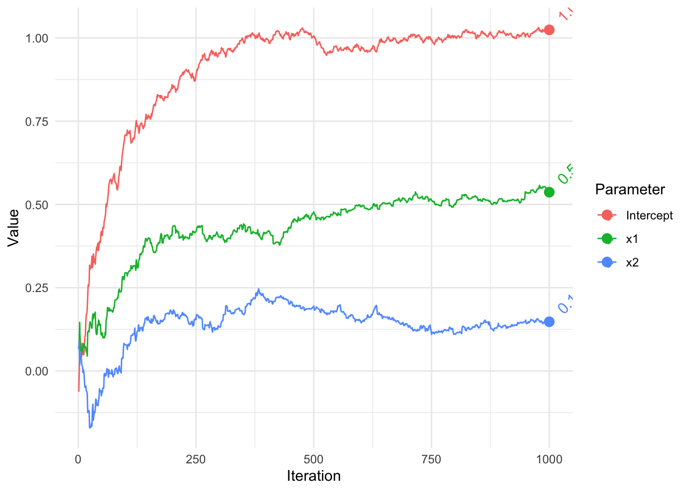
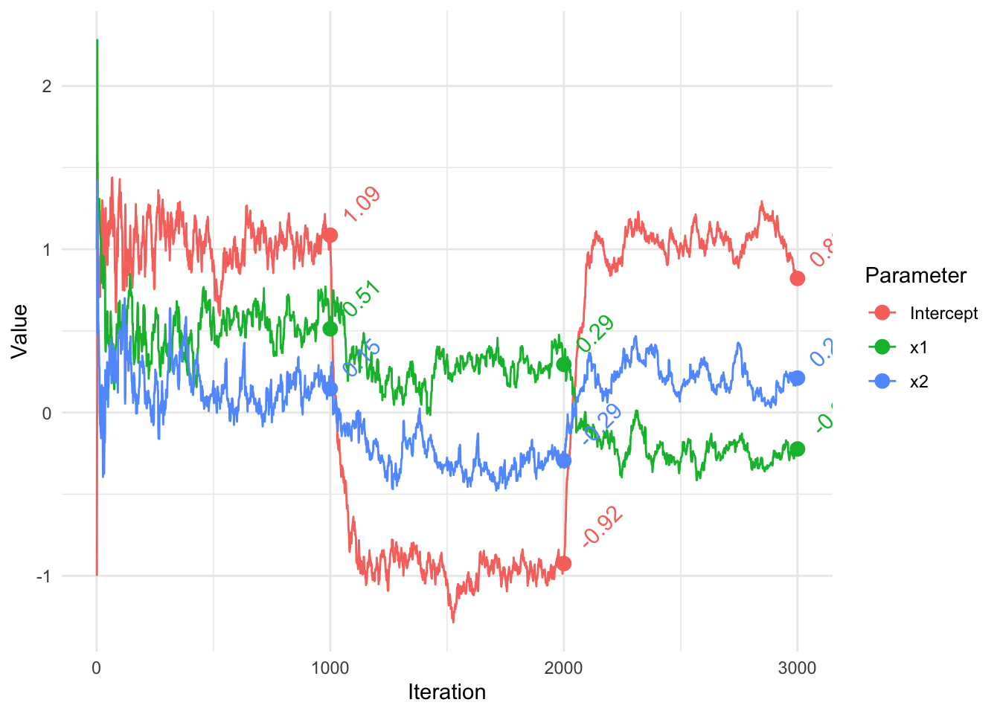

set.seed(1234)
n = 1000
x1 = rnorm(n)
x2 = rnorm(n)
y = 1 + .5*x1 + .2*x2 + rnorm(n)
X = cbind(Intercept = 1, x1, x2)
#' # Stochastic Gradient Descent Algorithm
sgd = function(
par, # parameter estimates
X, # model matrix
y, # target variable
stepsize = 1, # the learning rate
stepsizeTau = 0, # if > 0, a check on the LR at early iterations
average = FALSE
){
# initialize
beta = par
names(beta) = colnames(X)
betamat = matrix(0, nrow(X), ncol = length(beta)) # Collect all estimates
fits = NA # fitted values
s = 0 # adagrad per parameter learning rate adjustment
loss = NA # Collect loss at each point
for (i in 1:nrow(X)) {
Xi = X[i, , drop = FALSE]
yi = y[i]
LP = Xi %*% beta # matrix operations not necessary,
grad = t(Xi) %*% (LP - yi) # but makes consistent with the standard gd R file
s = s + grad^2
beta = beta - stepsize * grad/(stepsizeTau + sqrt(s)) # adagrad approach
if (average & i > 1) {
beta = beta - 1/i * (betamat[i - 1, ] - beta) # a variation
}
betamat[i,] = beta
fits[i] = LP
loss[i] = (LP - yi)^2
}
LP = X %*% beta
lastloss = crossprod(LP - y)
list(
par = beta, # final estimates
parvec = betamat, # all estimates
loss = loss, # observation level loss
RMSE = sqrt(sum(lastloss)/nrow(X)),
fitted = fits
)
}
#' # Run
#' Set starting values.
init = rep(0, 3)
#' For any particular data you might have to fiddle with the `stepsize`, perhaps
#' choosing one based on cross-validation with old data.
sgd_result = sgd(
init,
X = X,
y = y,
stepsize = .1,
stepsizeTau = .5,
average = FALSE
)
str(sgd_result)List of 5
$ par : num [1:3, 1] 1.024 0.537 0.148
..- attr(*, "dimnames")=List of 2
.. ..$ : chr [1:3] "Intercept" "x1" "x2"
.. ..$ : NULL
$ parvec: num [1:1000, 1:3] -0.06208 -0.00264 0.04781 0.09866 0.08242 ...
$ loss : num [1:1000] 0.67 1.261 1.365 2.043 0.215 ...
$ RMSE : num 1.01
$ fitted: num [1:1000] 0 -0.0236 -0.0446 -0.2828 0.1634 ...sgd_result$par [,1]
Intercept 1.0241049
x1 0.5368198
x2 0.1478470#' ## Comparison
#'
#' We can compare to standard linear regression.
#'
# summary(lm(y ~ x1 + x2))
coef1 = coef(lm(y ~ x1 + x2))
rbind(
sgd_result = sgd_result$par[, 1],
lm = coef1
) Intercept x1 x2
sgd_result 1.024105 0.5368198 0.1478470
lm 1.029957 0.5177020 0.1631026#' ## Visualize Estimates
#'
library(tidyverse)── Attaching packages ─────────────────────────────────────── tidyverse 1.3.2 ──
✔ ggplot2 3.4.1 ✔ purrr 1.0.1
✔ tibble 3.1.8 ✔ dplyr 1.1.0
✔ tidyr 1.3.0 ✔ stringr 1.5.0
✔ readr 2.1.4 ✔ forcats 1.0.0
── Conflicts ────────────────────────────────────────── tidyverse_conflicts() ──
✖ dplyr::filter() masks stats::filter()
✖ dplyr::lag() masks stats::lag()gd = data.frame(sgd_result$parvec) %>%
mutate(Iteration = 1:n())
gd = gd %>%
pivot_longer(cols = -Iteration,
names_to = 'Parameter',
values_to = 'Value') %>%
mutate(Parameter = factor(Parameter, labels = colnames(X)))
ggplot(aes(
x = Iteration,
y = Value,
group = Parameter,
color = Parameter
),
data = gd) +
geom_path() +
geom_point(data = filter(gd, Iteration == n), size = 3) +
geom_text(
aes(label = round(Value, 2)),
hjust = -.5,
angle = 45,
size = 4,
data = filter(gd, Iteration == n)
) +
theme_minimal()
#' # Add alternately data shift
#' This data includes a shift of the previous data.
set.seed(1234)
n2 = 1000
x1.2 = rnorm(n2)
x2.2 = rnorm(n2)
y2 = -1 + .25*x1.2 - .25*x2.2 + rnorm(n2)
X2 = rbind(X, cbind(1, x1.2, x2.2))
coef2 = coef(lm(y2 ~ x1.2 + x2.2))
y2 = c(y, y2)
n3 = 1000
x1.3 = rnorm(n3)
x2.3 = rnorm(n3)
y3 = 1 - .25*x1.3 + .25*x2.3 + rnorm(n3)
coef3 = coef(lm(y3 ~ x1.3 + x2.3))
X3 = rbind(X2, cbind(1, x1.3, x2.3))
y3 = c(y2, y3)
#' ## Run
sgd_result2 = sgd(
init,
X = X3,
y = y3,
stepsize = 1,
stepsizeTau = 0,
average = FALSE
)
str(sgd_result2)List of 5
$ par : num [1:3, 1] 0.821 -0.223 0.211
..- attr(*, "dimnames")=List of 2
.. ..$ : chr [1:3] "Intercept" "x1" "x2"
.. ..$ : NULL
$ parvec: num [1:3000, 1:3] -1 -0.119 0.624 1.531 1.063 ...
$ loss : num [1:3000] 0.67 2.31 3.69 30.99 10.58 ...
$ RMSE : num 1.57
$ fitted: num [1:3000] 0 -0.421 -0.797 -4.421 2.952 ...#' Compare with `lm` for each data part.
#'
sgd_result2$parvec[c(n, n + n2, n + n2 + n3), ] [,1] [,2] [,3]
[1,] 1.0859378 0.5128904 0.1457697
[2,] -0.9246994 0.2945723 -0.2941759
[3,] 0.8213521 -0.2229918 0.2112883rbind(coef1, coef2, coef3) (Intercept) x1 x2
coef1 1.0299573 0.5177020 0.1631026
coef2 -0.9700427 0.2677020 -0.2868974
coef3 1.0453166 -0.2358521 0.2418489#' Visualize estimates.
#'
gd = data.frame(sgd_result2$parvec) %>%
mutate(Iteration = 1:n())
gd = gd %>%
pivot_longer(cols = -Iteration,
names_to = 'Parameter',
values_to = 'Value') %>%
mutate(Parameter = factor(Parameter, labels = colnames(X)))
ggplot(aes(x = Iteration,
y = Value,
group = Parameter,
color = Parameter
),
data = gd) +
geom_path() +
geom_point(data = filter(gd, Iteration %in% c(n, n + n2, n + n2 + n3)),
size = 3) +
geom_text(
aes(label = round(Value, 2)),
hjust = -.5,
angle = 45,
data = filter(gd, Iteration %in% c(n, n + n2, n + n2 + n3)),
size = 4,
show.legend = FALSE
) +
theme_minimal()